Storyboard · Best YouTube tutorials per serve · Expedition
Four serves to add to a club player's arsenal — short pendulum, long fast no-spin, forehand tomahawk, reverse pendulum upgrade — anchored on the YouTube videos that actually teach them. Storyboarded as a shooting reel: pick frames, channel mastheads, shot-list cues, six-day call sheet.
Director's slate · Picks
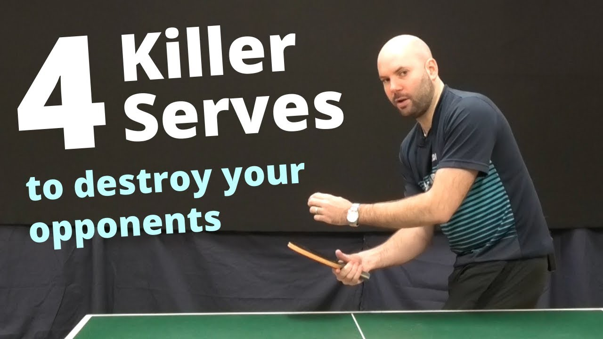
11:37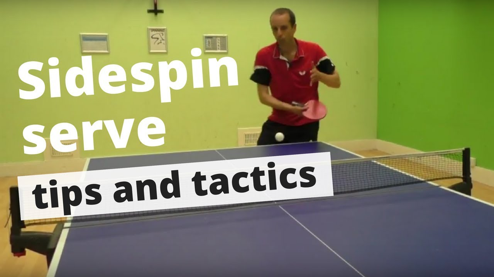
~5 min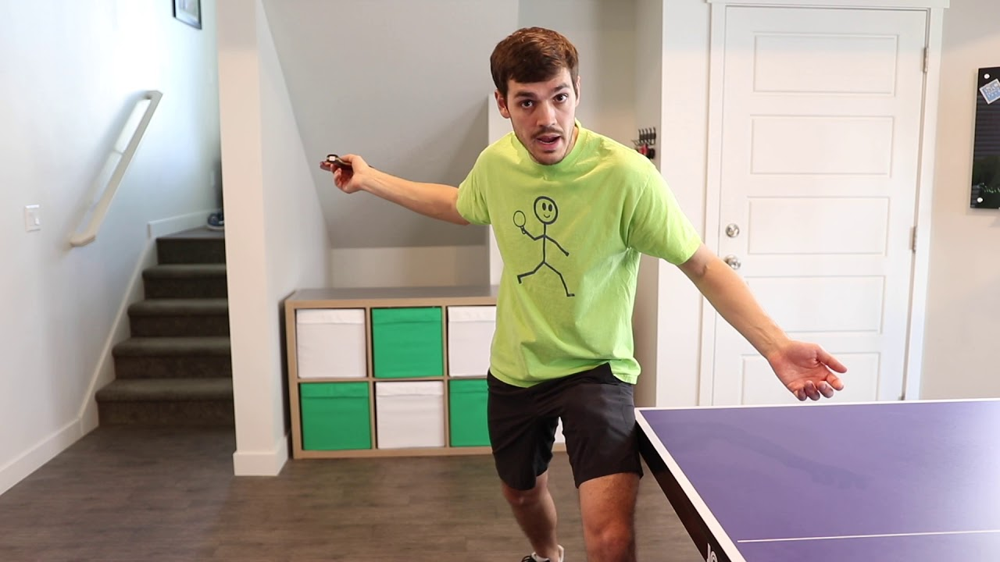
tutorial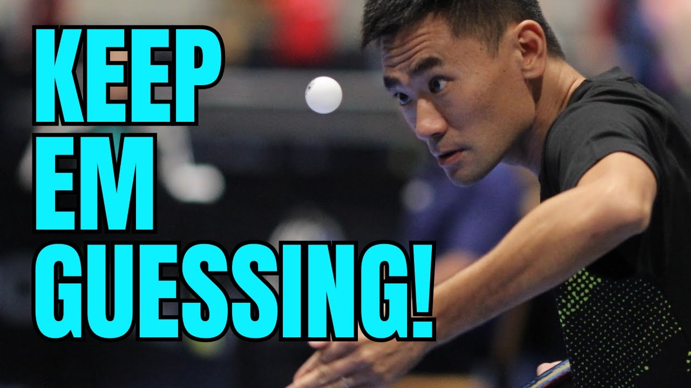
4:00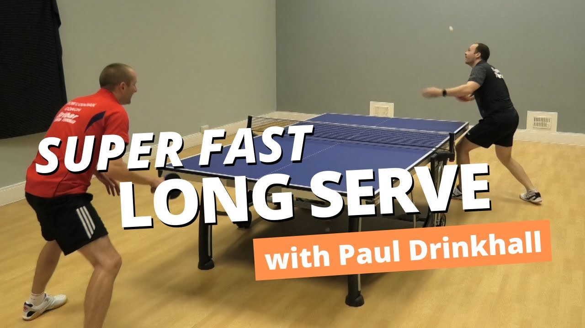
5:57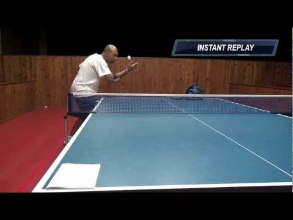
2:50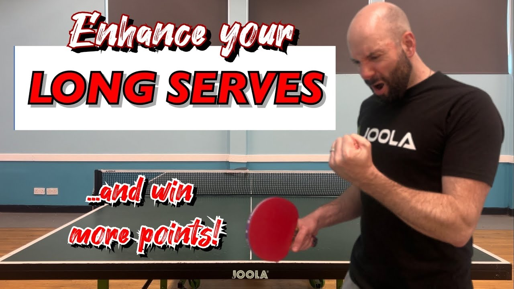
14:48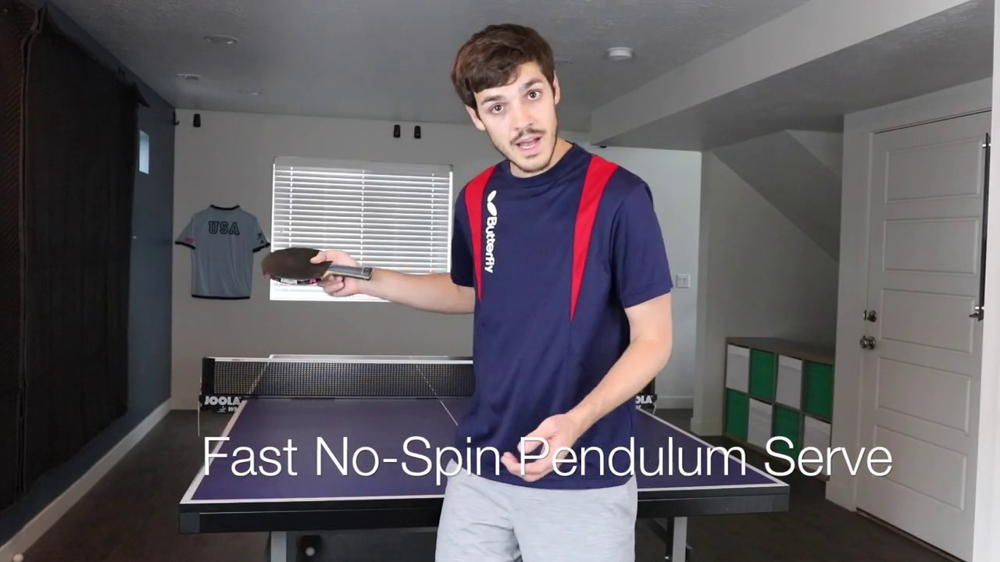
~2 min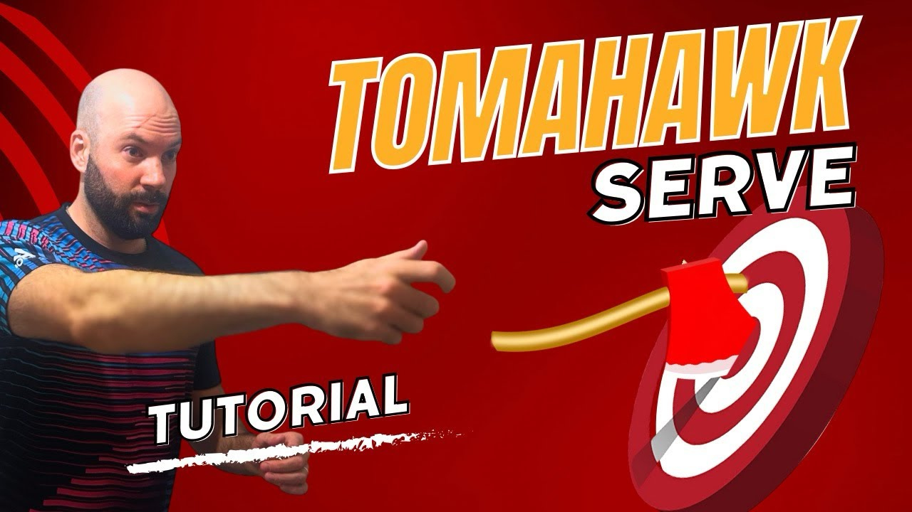
tutorial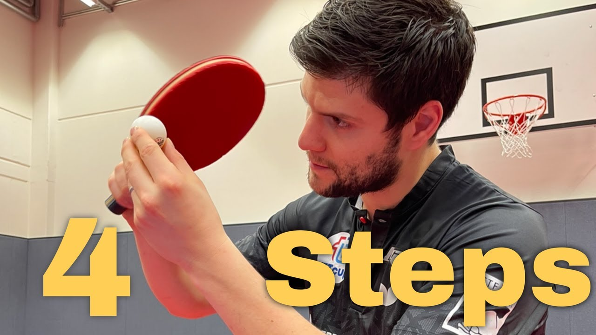
tutorial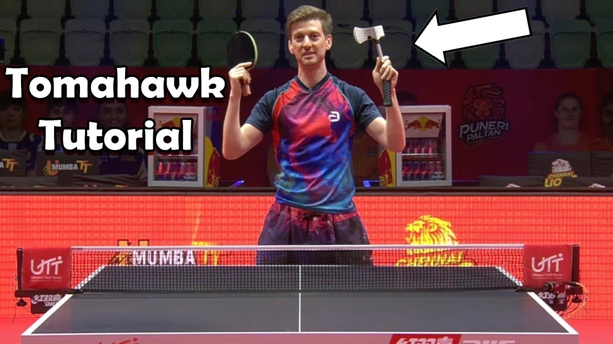
UTT clip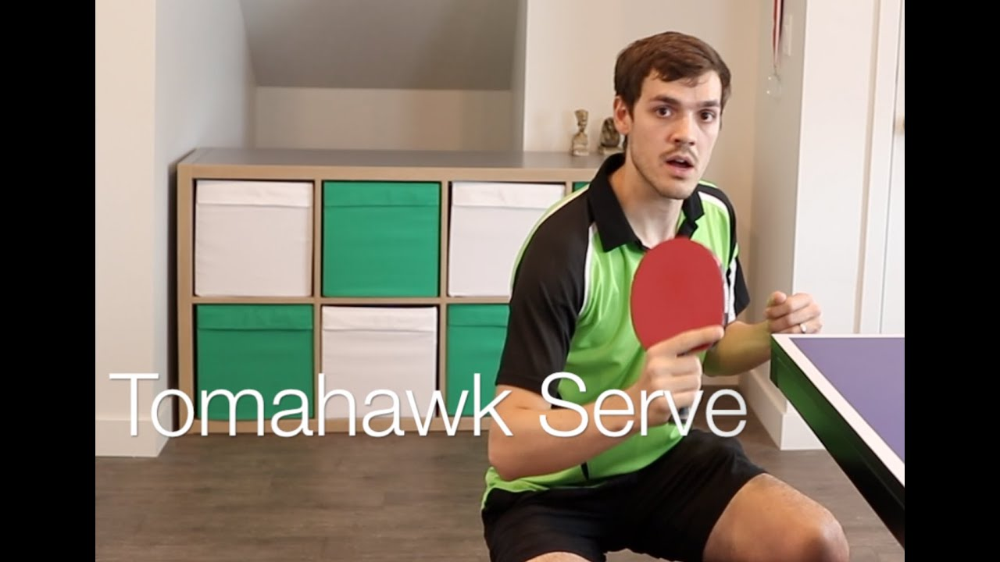
~3 min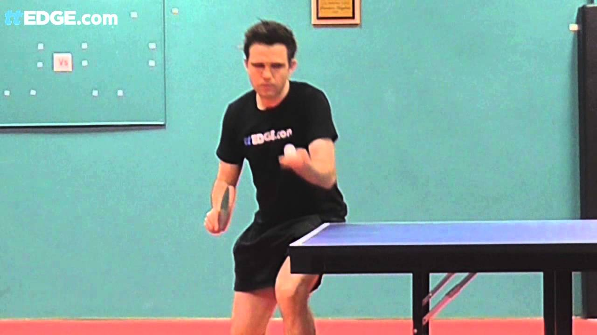
demo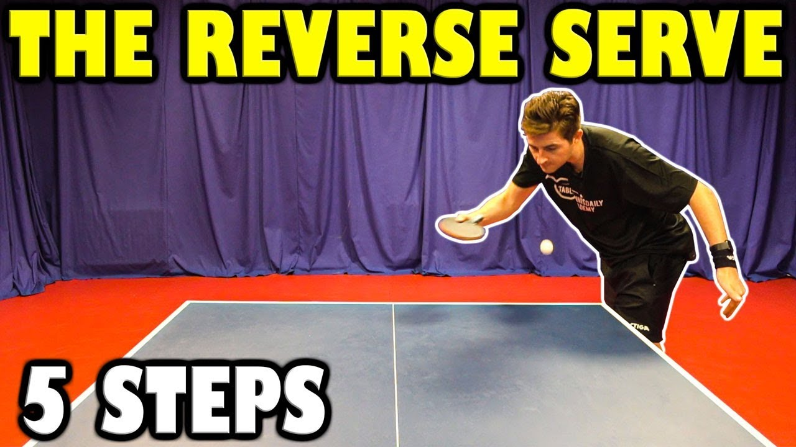
8:16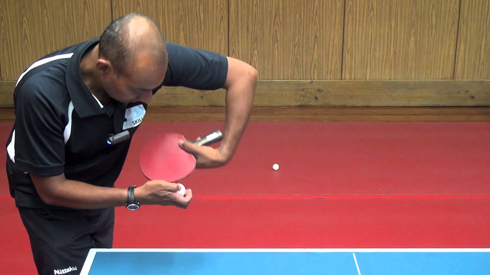
short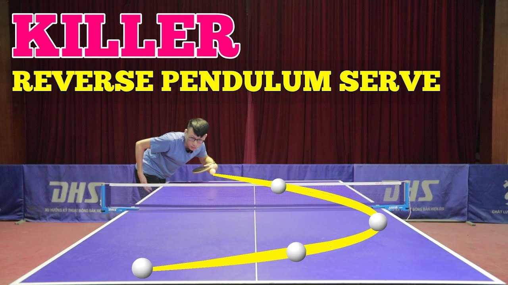
8:30Credits · Channels worth subscribing to
TT England Level-2 coach, trained under Timo Boll's former coach Richard Prause[57].
Jeff Plumb (Sydney 2000 Olympian) + Alois Rosario (Australian Olympic/Paralympic coach 2012–2024)[55][56].
Dan Ives (semi-pro, sport-coaching degree)[59] + Andrew Baggaley (English No. 1, world No. 139)[60].
Craig Bryant. Channel is only about serves[32].
France-based club coach, Sorbonne PhD, Chinese-philosophy lens[61].
USATT Certified National Coach, peak rating 2610[64].
Official ITTF commentator since 2014[62].
Finnish trick-shot trio; Otto + Miikka are semi-pro[63].
Independent rankings put PingSkills, Lodziak, TableTennisDaily and PingSunday at the top tier of coaching channels[66].
B-roll · Watch the pros
When the technique videos saturate, switch to slow-motion pro footage to model rhythm. Each pairs with a serve above.
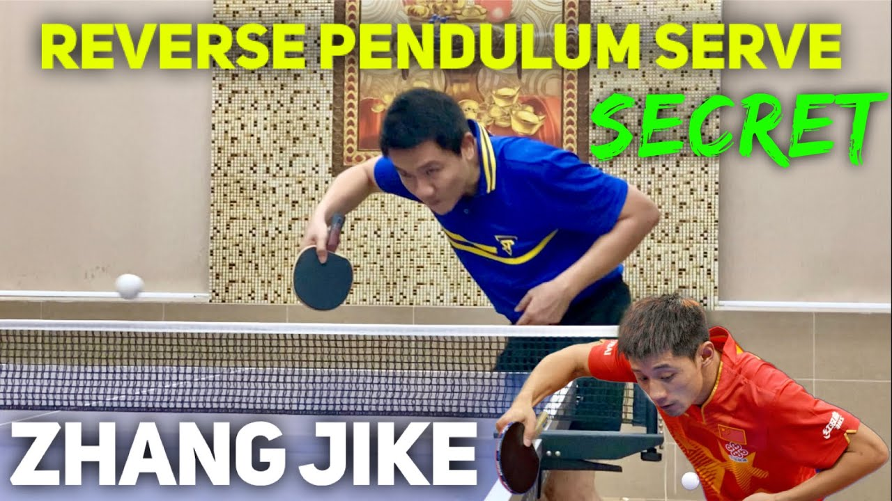
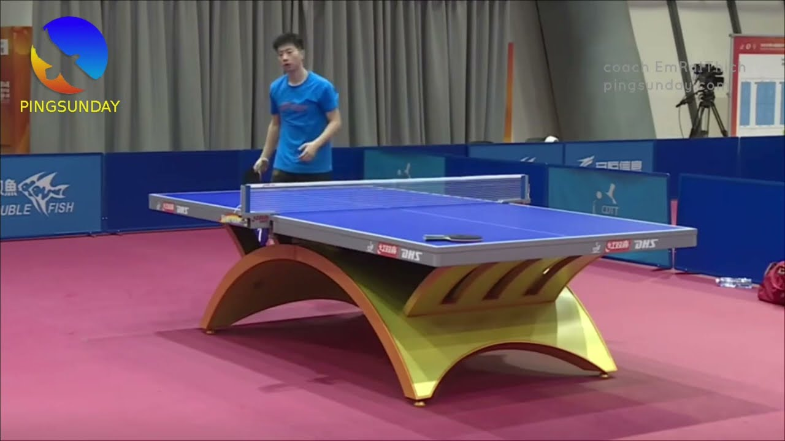
Call sheet · One-week shooting schedule